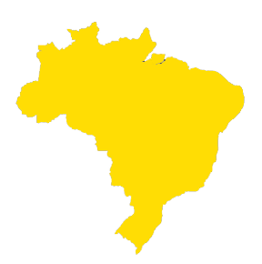
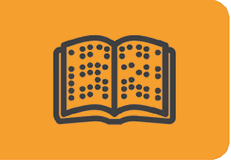
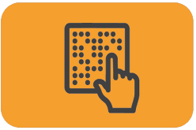
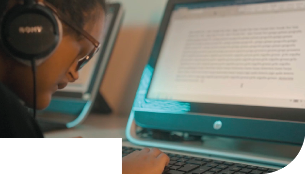
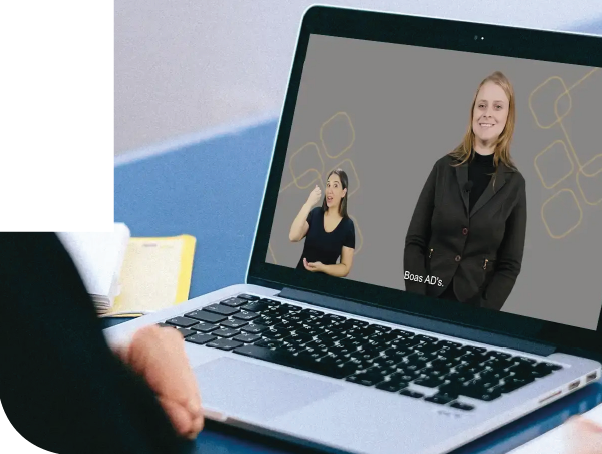
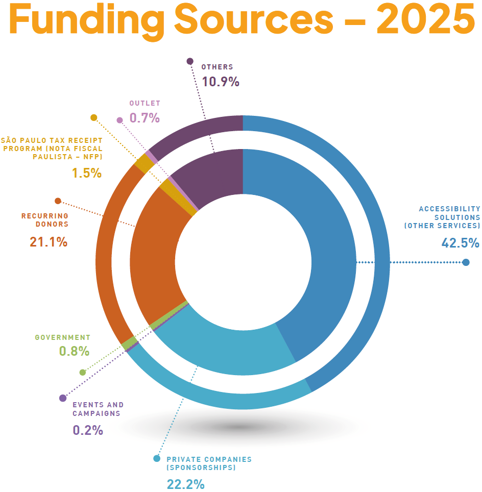
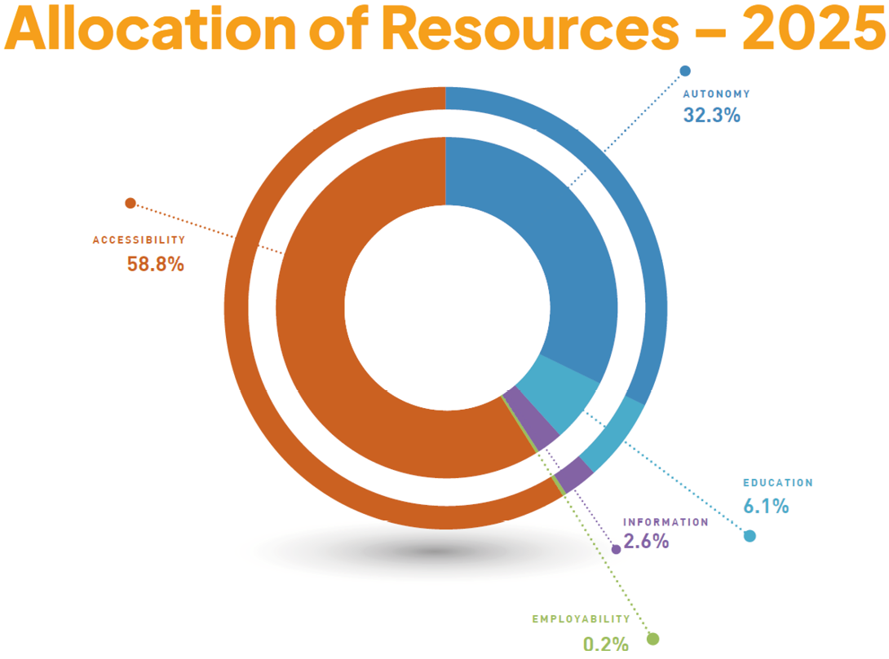
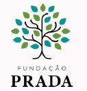
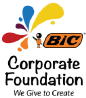

COVER
![<span xml:lang='en-US' lang='en-US' class='data-en-US'>Image: Cover. In the center, the title: ANNUAL REPORT, 2025. In the upper right corner, the logo of the</span><span class='data-pt-BR' lang='pt-BR'> DORINA NOWILL </span><span xml:lang='en-US' lang='en-US' class='data-en-US'>FOUNDATION FOR THE BLIND, consisting of a smiling yellow face wearing sunglasses, with the name in black capital letters below. On the left, three rows of black, yellow, and orange circles. At the bottom, in orange, the words Annual Report are written in Braille. The background is yellow. end of image.</span>](../resources/images/image_Image12687.png)
Page 1
Page without content.
Page 2
Message from the Chair of the Board of Trustees and the Chief Executive Officer
In 2025, Fundação Dorina Nowill para Cegos experienced one of the most significant years in its recent history. Throughout the year, our teams worked with dedication and collaboration to ensure not only the continuity of our activities, but also the expansion of our impact, even among major structural changes.
The year was marked by the progress of our renovation project and the consolidation of Unit II, expanding our capacity to serve more people and preparing the Foundation for a new phase of growth. This milestone comes at a symbolic moment as we prepare to celebrate Fundação Dorina’s 80th anniversary in 2026.
Despite the operational challenges brought about by these changes, we achieved remarkable results. We recorded the highest number of clients served in our history, expanded our outreach initiatives, and strengthened access to essential rehabilitation, education, and inclusion services for visually impaired people.
We also continued to invest in expanding strategic partnerships, particularly with public-sector organizations and national and international institutions, reinforcing Fundação Dorina Nowill para Cegos as a leading reference in accessibility and inclusion. Our participation in global forums and admission to international networks further strengthened this position and extended the reach of our work.
More than a year of achievements, 2025 was a period of strengthening our institutional foundations. Every milestone reflects our commitment to high-quality services, the Foundation’s long-term sustainability, and the future of the people we serve.
We look ahead with confidence that the coming years will bring even greater opportunities to expand our impact and transform lives through inclusion.
Eduardo de Oliveira
Chair of the Board of Trustees
Alexandre Munck
Chief Executive Officer
About Fundação Dorina Nowill para Cegos
![<span xml:lang='en-US' lang='en-US' class='data-en-US'>Image: Photograph.</span><span class='data-pt-BR' lang='pt-BR'> Dorina Nowill, </span><span xml:lang='en-US' lang='en-US' class='data-en-US'>a woman with short brown hair, is wearing gold-rimmed sunglasses, pearl earrings, and a black collared blouse. She is smiling. In the background, there is a poster with the text:</span><span class='data-pt-BR' lang='pt-BR'> DORINA NOWILL </span><span xml:lang='en-US' lang='en-US' class='data-en-US'>FOR THE BLIND, 50 YEARS. End of image.</span>](../resources/images/image_Image12695.png)
SUBTITLE: Photo: Dorina Nowill. END OF SUBTITLE.
Promoting autonomy and independence for visually impaired people, while raising awareness about the importance of inclusion and accessibility, is what drives Fundação Dorina Nowill para Cegos.
The Foundation was established through the initiative of Dorina Nowill, an educator who lost her sight at a young age and transformed her personal experience into a lifelong commitment to expanding access to reading in Brazil. In 1946, she founded what was then known as the Foundation for the Book for the Blind in Brazil, launching the country’s first Braille book production program—an activity that remains one of the cornerstones of the Foundation’s work today.
Over the decades, the Foundation has broadened its scope, developing solutions across the editorial, printing, audiovisual, and digital fields, while also establishing specialized habilitation, rehabilitation, and family support services.
Recognized in Brazil and internationally for the quality of its work, Fundação Dorina continues to expand its programs, partnerships, and technological innovations, remaining true to the commitment that inspired its founding: ensuring access, autonomy, and full participation for people with visual impairments in every sphere of society.
Page 3
Purpose, Values, and Vision
Our PURPOSE
To promote inclusion and accessibility for visually impaired people, working together to transform lives and society.
Our VALUES
• Ethics are non-negotiable.
• Transparency in everything we do and how we do it.
• Respect is at the heart of all our relationships.
• Diversity is a fact; inclusion is our choice.
• Perseverance in everything we do—we never give up.
• Commitment to our purpose.
• Innovation to build the future while honoring our legacy.
Our VISION
To be recognized worldwide as a leading organization in inclusive empowerment, expanding, innovating, and multiplying high-impact initiatives for present and future generations.
Visual Impairment Around the World
In Brazil, data from the Brazilian Institute of Geography and Statistics (IBGE) indicate that approximately 6.5 million people have a visual impairment, including around 528,000 people who are blind and more than 6 million people with low vision. These figures underscore the need for public policies, specialized services, and initiatives that promote accessibility, rehabilitation, and greater autonomy for people with visual impairments.
According to the World Health Organization (WHO), between 60% and 80% of blindness cases could be prevented through early diagnosis and appropriate treatment.
In Brazil

6.5 MILLION
people with visual impairments
528 THOUSAND
people who are blind
MORE THAN 6 MILLION
people with low vision
Access to Information
Fundação Dorina Nowill para Cegos expands access to knowledge by producing accessible content in a variety of formats, ensuring that visually impaired people can study, access information, and actively participate in society.
Throughout 2025, the Foundation maintained a high volume of production across its audio, video, digital, and Braille publishing operations, further strengthening its position as a national leader in the adaptation and distribution of accessible content.
AUDIO
264
PROJECTS
43,640
pages produced
VIDEO
481
VIDEOS PRODUCED
420 accessibility productions, including audio description, Brazilian Sign Language (Libras), and subtitles for deaf and hard-of-hearing audiences (SDH).
DIGITAL EDITORIAL HIGHLIGHTS
PAGES CONVERTED
59,383
ACCESSIBLE TITLES PRODUCED
1,437
BRAILLE PRINTING HIGHLIGHTS

TOTAL BRAILLE PAGES PRINTED IN 2025
11,002,304
TOTAL PAGES PROCESSED IN 2025
320,291
Page 4
Dorinateca
Fundação Dorina’s Digital Library
3,244
registered platform users
2,020
registered platform readers

2,427
book downloads
5,735
accessible titles available in the collection
Inclusive Reading Network
The Inclusive Reading Network works with organizations in the fields of education, literacy, and culture across Brazil, promoting the distribution of accessible books and promoting dialogue on the implementation of accessibility practices in a wide range of settings.
100
activities promoting accessible and inclusive reading
2,678
participants (in-person and online)
1,612
institutions received donations of accessible books
LEGO® Braille Bricks
Launched in 2020, the LEGO® Braille Bricks program is an initiative developed by Fundação Dorina Nowill para Cegos in partnership with the LEGO Foundation, Denmark, to support the inclusive literacy process.
5,149
participating educators
1,261
participating schools
85
municipalities involved
49,000+
students reached
Access to Autonomy
The Habilitation and Rehabilitation area is Fundação Dorina’s primary point of entry for visually impaired people, supporting the development of autonomy and inclusion while also working closely with their families. In 2025, the Foundation provided 55,444 services, with a significant increase in services for children, driven by early diagnosis and outreach initiatives. Throughout the year, the area expanded its activities, strengthened its team, consolidated practices such as music therapy and Takkyu Volley, established the Low Vision Clinic at Unit II, and broadened partnerships with other organizations.
![Image: Photograph. Seven people are seated around a blue table tennis table, with a net in the center and an orange ball. Each person is holding an adapted paddle above the table; the paddle consists of a rectangular black handle. In the center, a man with short brown hair is wearing a pink polo shirt with white stripes and holding an adapted racket; next to the racket is an orange table tennis ball. To the left, a woman with long red hair is wearing a black blouse. Next to her, a woman with short brown hair is wearing a gray blouse. On the right are four men: two have short gray hair and are wearing light-colored shirts; another is wearing a black cap and a black shirt; and the last one is wearing a gray cap. In the background, a girl with her eyes closed and a man holding her hands are sitting in chairs; behind them are playground toys. End of image.](../resources/images/image_image.png)
SUBTITLE: Photo: Takkyu Volley session. END OF SUBTITLE.
2,215
clients
2,585
family members
55,444
services provided
Page 5

SUBTITLE: Photo: Computer Skills course. END OF SUBTITLE.

SUBTITLE: Photo: Training Center. END OF SUBTITLE.
Access to Education
Courses
In 2025, Fundação Dorina expanded its training initiatives by introducing new courses and strengthening the personal and professional development of visually impaired people. Throughout the year, 490 students participated in courses across a wide range of subjects, including arts, customer service, choir, entrepreneurship, computer skills, English, digital marketing, massage therapy, meditation, Braille music notation, music therapy, theater, and administrative skills, as well as dedicated classes for adolescents.
These courses help foster autonomy by expanding opportunities for social inclusion and equipping participants with skills for everyday life and the workplace.
Training Center
In 2025, the Training Center expanded both its course offerings and its reach. The Introduction to Audio Description course was redesigned and offered in three classes, alongside two classes of the In-Person Audiobook Narration course.
A total of 920 students participated in the Training Center courses, representing a 59% increase compared with 2024. Of these, 118 students with visual impairments attended the courses free of charge, expanding access to professional training in accessibility.

Scan the QR code to explore our courses.
Access to Employment
In 2025, the Employability area remained focused on career guidance and preparing visually impaired people for the workforce. Throughout the year, 374 individuals received support through one-on-one guidance and training activities designed to develop professional skills and facilitate employment.
Awareness-raising initiatives also expanded, with lectures, workshops, and events reaching 3,351 participants, strengthening engagement with employers and promoting inclusion in the labor market.
The Foundation also worked closely with 201 companies, expanding strategic partnerships and helping create more accessible and inclusive workplaces.
374
clients receiving career guidance
3,351
people reached through awareness initiatives
201
partner companies
Página 6
Figura 1

Figura 2

Page 7
Vision Partners
Meet the companies that helped make Fundação Dorina’s achievements and progress possible through sponsorships, donations, and support for projects carried out throughout the year.
DIAMOND |
|
GOLD |
|
BRONZE |

|
COPPER |

|

Página 8
Be Part of This Story
INCLUSION SUPPORT SERVICES
Services for visually impaired people.
atendimento@fundacaodorina.org.br
(11) 5087-0999 – Option 2
(11) 5087-0998
GUIDED TOURS
centrodememoria@fundacaodorina.org.br
(11) 5087-0955
DONOR RELATIONS
Make a donation and help transform the lives of people with visual impairments.
relacionamento@fundacaodorina.org.br
(11) 5087-0999 – Option 4
SPONSORSHIPS AND PARTNERSHIPS
Support Fundação Dorina’s projects through Brazil’s tax incentive laws, enabling tax-deductible contributions, or by becoming a direct sponsor.
parceria@fundacaodorina.org.br
(11) 5087-0982
ACCESSIBILITY SOLUTIONS
Contact our team to make your products and services more accessible.
comercial@fundacaodorina.org.br
(11) 5087-0999 – Option 1
VOLUNTEER WITH US
voluntariado@fundacaodorina.org.br
(11) 5087-0971
Credits
Chief Executive Officer
Alexandre Munck
Fundraising and Communications & Marketing Management
Taisa Pelucio
Communications & Marketing Coordinator
Carolina Orilio
Content Development
Danielle Bambace - W5 Publicidade
Copy Editing
Carolina Orilio
Graphic Design
Beto Paixão - W5 Publicidade
Layout Design
Malu Paiva - W5 Publicidade
Support
Cláudia Piazza Costa
Rodrigo Torres
Photography
Acervo da Fundação Dorina
Cecília Furtado
Cléo Acevili
Fernando Pimentel
Rodrigo Torres
Art Direction
W5 Publicidade
Fundação Dorina Nowill para Cegos
Unit I
558 Dr. Diogo de Faria Street
Vila Clementino, São Paulo, SP, Brazil
Unit II
289 Estado de Israel Street
Vila Clementino, São Paulo, SP, Brazil
+55 (11) 5087-0999 / +55 (11) 5554-0999
fundacaodorina.org.br

FOLLOW FUNDAÇÃO DORINA ON SOCIAL MEDIA
 fundacaodorinanowill
fundacaodorinanowill
 fundacaodorina
fundacaodorina
 fundacaodorina
fundacaodorina
fundacaodorina

Scan the QR code to access the ACCESSIBLE VERSION
***
EPUB
Produzido por Fundação Dorina Nowill para Cegos
Rua Doutor Diogo de Faria, 558 - Vila Clementino
CEP: 04037-001 - São Paulo - SP
Telefone: (11) 5087-0999
www.fundacaodorina.org.br
*
Linearização: Letícia Saracini Duarte
Descrição de imagens: Francielle Maria Chies
Diagramação: Bruno Alves Suniga
Revisão: Marina Vargas O. Angelelli
Supervisão: Marina Vargas O. Angelelli